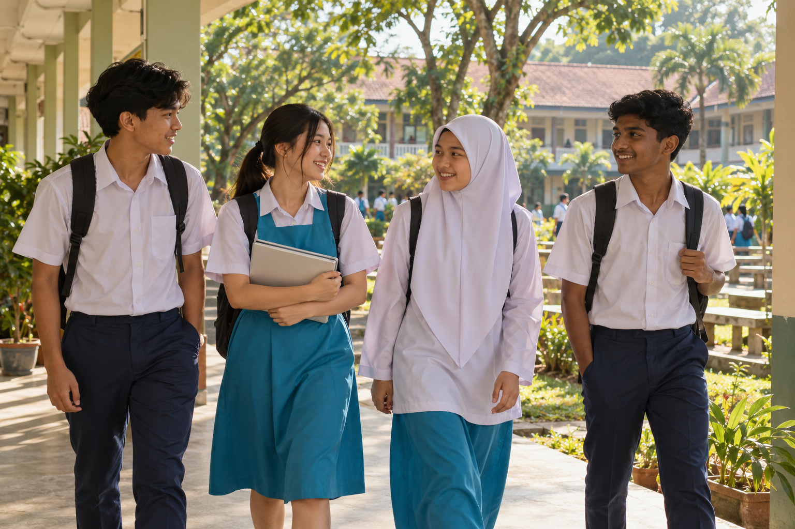
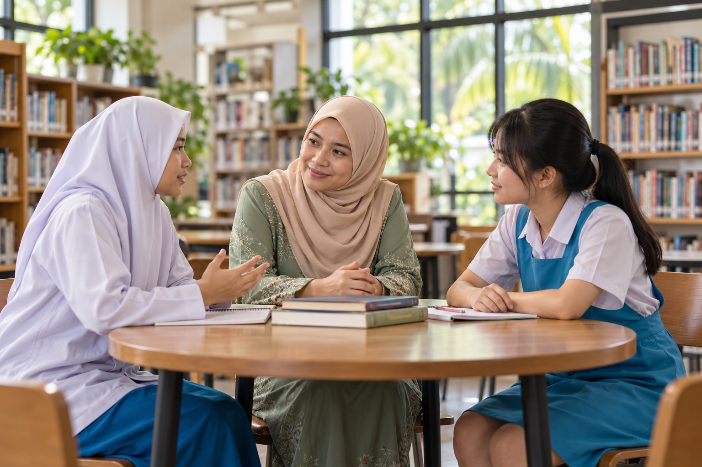
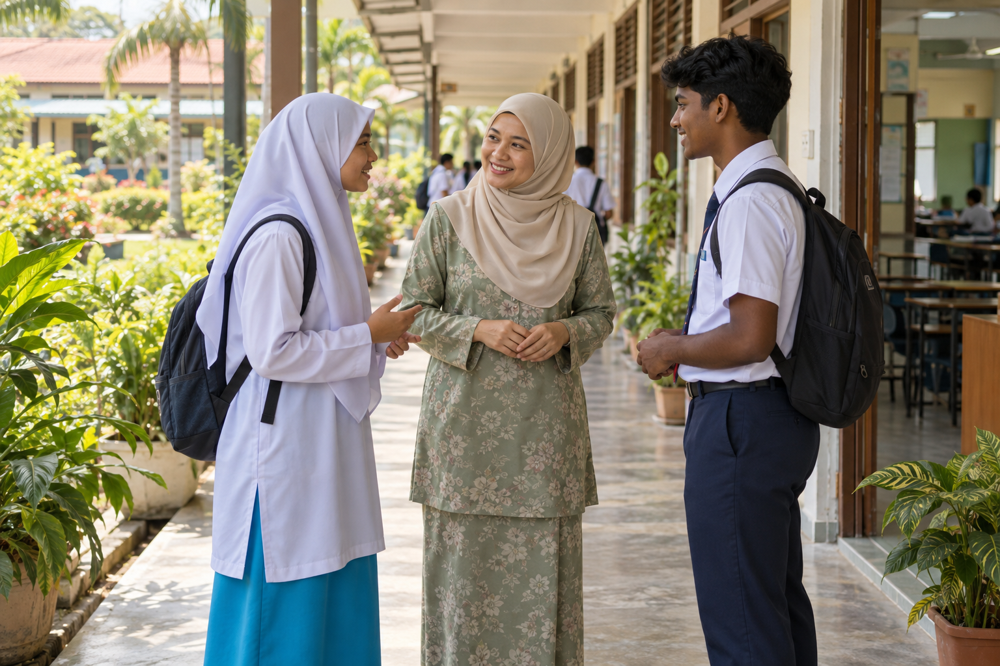
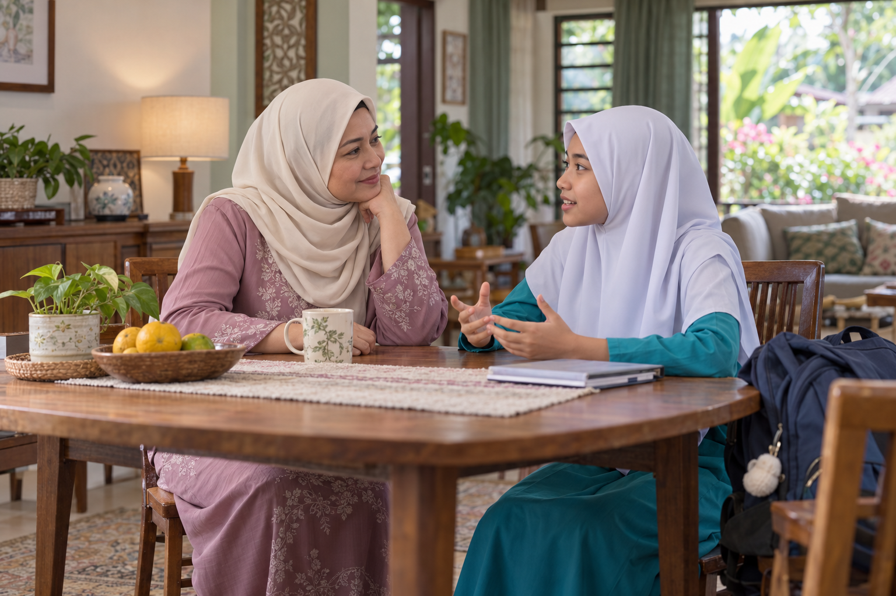
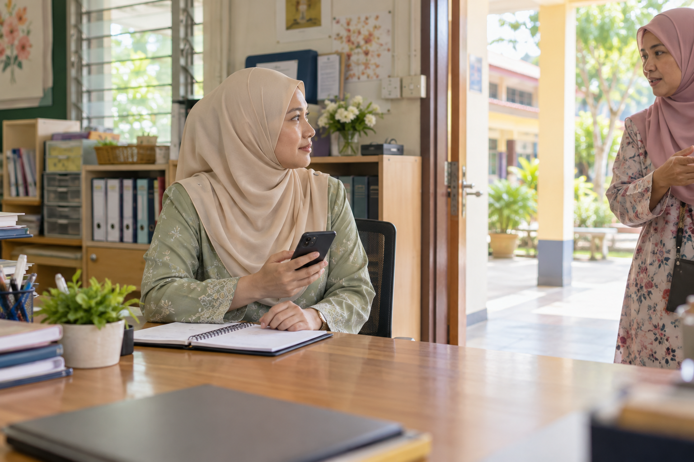

Sekolah selamat, tempat anak-anak bertumbuh
Mendengar dengan hati. Melindungi bersama.
Disediakan oleh
Izzah Sofiyah binti Mohd Murtadha
Sarjana Muda Sains Pentadbiran dan Pembangunan Tanah dengan Kepujian, Universiti Teknologi Malaysia
Ahli Dewan Muda Johor

Kita mahu mereka datang dengan harapan, pulang dengan senyuman.
Belajar, berkawan dan membesar tanpa rasa takut.
Rasa selamat ialah permulaan kepada pembelajaran.
Melihat sekolah melalui mata seorang anak
- Di kelas , berani bertanya.
- Di asrama , tahu tempat meminta bantuan.
- Bersama rakan, juga dalam talian , dihormati dan diterima.
Rasa selamat bermula dalam pengalaman sehari-hari.
Sebelum mencari jawapan, mari memahami.
- Dengar murid, keluarga dan pendidik.
- Fahami hubungan rakan dan keadaan sekolah.
- Semak bukti sebelum membuat kesimpulan.
Memahami dahulu membuka jalan untuk membantu.

Ada anak yang ingin bercerita, tetapi belum berani.
Mungkin dia bimbang tidak dipercayai. Mungkin dia takut keadaan menjadi lebih sukar.
Langkah pertama kita: menyediakan ruang untuk didengar.
Perlindungan tumbuh apabila kita bergerak bersama
Tiga perkara yang saling melengkapi
- Hubungan yang dipercayai , ada seseorang yang sudi mendengar.
- Tindakan yang jelas , bantuan diteruskan sehingga murid terlindung.
- Alat yang membantu , teknologi memudahkan kita menghubungkan kedua-duanya.
Mulakan dengan manusia, kemudian pilih alat yang benar-benar diperlukan.
Kehadiran kita boleh membawa makna
Perhatian kecil, makna yang besar
- Bertanya khabar dan mengenali murid.
- Bimbing rakan menjaga rakan, tanpa hukuman oleh senior.
- Amalkan empati dalam kehidupan sekolah.
- Sokong guru dan warden dalam amanah menjaga anak-anak.

Apabila seorang anak mula bercerita…
- Dengar dengan tenang.
- Lindungi keselamatannya.
- Hubungkan dengan petugas yang membantu.
- Susuli sehingga bantuan sampai.
Kepercayaan tumbuh selepas kita mendengar dan bertindak.
Rumah dan sekolah, satu lingkungan sokongan
Perbualan yang tenang membuka ruang untuk anak berkongsi.
“Apa yang menggembirakan hari ini? Ada perkara yang membuat kamu tidak selesa?”
Cadangan pembuka bicara, bukan soal siasat.

Teknologi boleh mendekatkan bantuan
Pilih mengikut keperluan sekolah
| Apabila murid memerlukan… | Alat boleh membantu… | Orang dewasa tetap perlu… |
|---|---|---|
| Ruang untuk melapor | Saluran aduan digital | Mendengar dan melindungi pengadu |
| Bantuan segera | Butang SOS | Menerima amaran dan hadir membantu |
| Kawasan lebih terjaga | Rekod rondaan, sensor terpilih | Menyemak keadaan dan bertindak |
| Perhatian berterusan | Rekod tindakan susulan | Kembali memastikan murid selamat |
Bayangkan satu butang bantuan ditekan.
Situasi rekaan untuk direnungkan bersama
Amaran sampai ke telefon petugas.
Namun, siapa yang akan datang?
Alat boleh menghantar isyarat. Perlindungan memerlukan seseorang yang menyahutnya.

Menjaga keselamatan, memelihara maruah
- Jaga kerahsiaan maklumat murid.
- Semak amaran; alat boleh tersilap.
- Sediakan bantuan tanpa peranti.
- Elakkan label automatik terhadap murid.
Menjaga dengan penuh hormat.
Kita boleh bermula, langkah demi langkah.
- Kenali keperluan , dengar dan fahami sekolah.
- Cuba bersama , sokong petugas, pilih alat yang sesuai.
- Nilai dan perbaiki , perluas usaha yang berkesan.
Beri masa, latihan dan sokongan untuk perubahan bertumbuh.
Bagaimana kita tahu usaha ini membantu?
- Anak lebih selesa bersuara.
- Bantuan lebih cepat sampai.
- Ada yang terus mengambil berat.
- Kejadian berulang berkurang.
Lihat perlindungan yang dirasai anak-anak.
Tiga ikhtiar untuk masa hadapan mereka
Dengan penuh takzim, dipersembahkan untuk pertimbangan
- Perkukuh hubungan , sokong guru, warden, kaunselor dan keluarga.
- Pastikan bantuan sampai , jadikan setiap aduan amanah yang disusuli.
- Pilih teknologi dengan cermat , uji manfaatnya sebelum diperluas.
Usaha yang baik bermula dengan keprihatinan dan diteruskan dengan tanggungjawab.
Teknologi membantu. Kasih dan tanggungjawab melindungi.
Teknologi bukanlah penyelesaian muktamad.
Anak-anak memerlukan manusia yang mendengar, mengambil berat dan hadir apabila diperlukan.
Sekian, sembah patik.
Asas kandungan dan batas tafsiran
- Bahan asas: Laporan_Kes_Pembunuhan_Sekolah_2026.md yang dibekalkan, serta draf persembahan umum.
- Batas bukti: butiran kes dan angka laporan asal belum disahkan semula; tidak dipersembahkan sebagai dapatan rasmi.
- Status: cadangan untuk perbincangan; tiada penilaian keberkesanan program atau teknologi dilakukan dalam pembentangan ini.
- Visual: lima ilustrasi fotografi janaan AI; bukan foto murid, institusi atau kejadian sebenar.
- Skop: keselamatan dan kesejahteraan murid di Malaysia; bebas daripada kepentingan institusi atau pembekal tertentu.